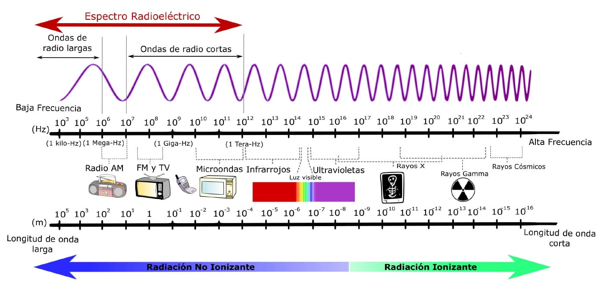
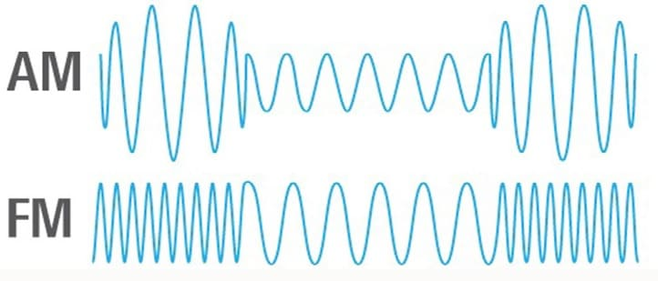
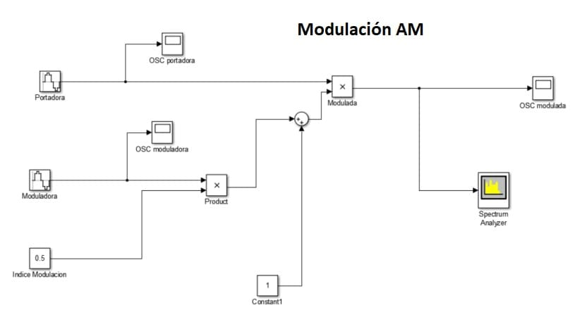
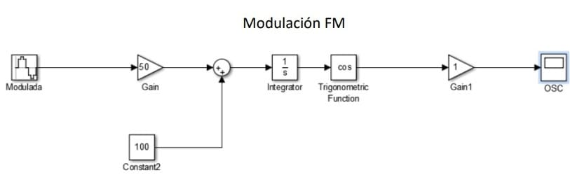
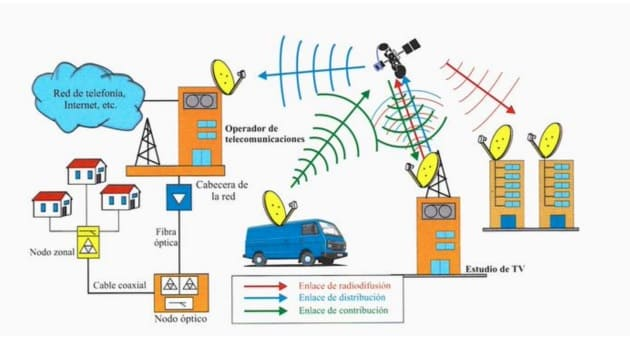
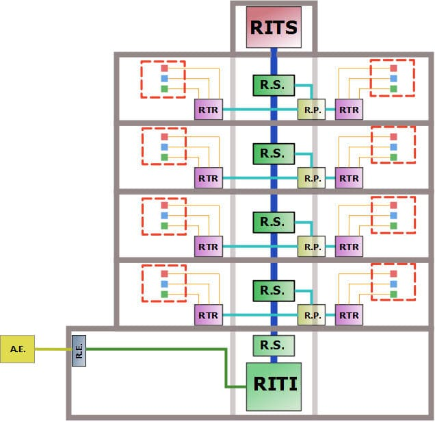
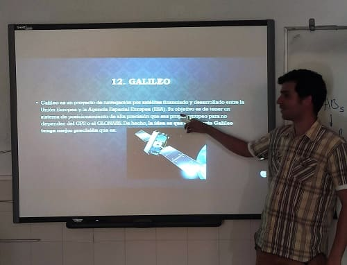
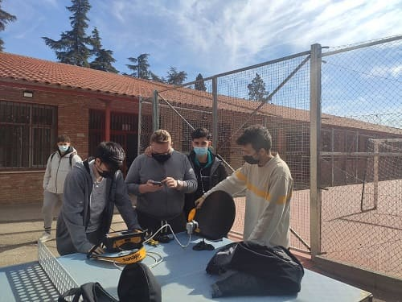
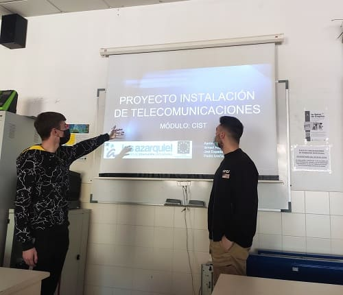

Este año en el IES Azarquiel estuve impartiendo ciclos realtivos a las telecomuniaciones de la rama Electricidad y Electrónica.
Estos ciclos son Instalaciones de telecomunicaciones de grado Medio y Informática y Telecomunicaciones de grado Superior.
En grado medio debido a las condiciones en las que impartimos con clases bastante llenas y con el coronavirus apenas se pudieron hacer practicas del módulo de Instalaciones de Radiocomunicaciones que daba.
En el ciclo de grado Superior impartia Configuración de Infraestructuras de Telecomunicaciones y Elementos de Telecomuniaciones.
Lo primero en aprender en telecomunicaciones son la física que lleva detrás una onda electromágnetica y aquellos efectos que le ocurren para ser modificada o atenuada. Después enseñar el espectro radioeléctrico en las telecomunicaciones que se puede ver en la siguiente imagen.

Una vez aprendidos estos conceptos pasaría a explicar las diferentes modulaciones que existen en las telecomunicaciones, empezando por las analógicas y los cambios que conllevan, AM, FM, PM.

Después vería las diferentes tecnologías y la evolución que ha habido con el paso del tiempo, sobre todo en telefonía. También otras tecnologías como radio o televisión.
También se realizaron tareas como conectar cableado a una antena Yagui y conectar un analizador de campo para poder sintonizar los canales de TDT y ver los diferentes parámetros relativos a las telecomunicaciones.


Conectar cable coaxial a la antena satélite para poder sintonizar televisión salelital, sin embargo debido a la altura en la que nos encontrabamos y a los obstaculos que había no pudimos sintonizar ningún canal.
Otra práctica estrella sería trabajar mediante MATLAB para la creación de señales matemáticas, intentando asemejar el escenario a las diferentes modulaciones estudiadas. Sobre todo las más fáciles en concepto como la AM y la FM. También la representación del espectro en frecuencia. Y después la realización de las prácticas mediante Simulink, un software de Matlab.

 Por último, en infraestructuras como va canalizadas las comunicaciones a la vivienda, ya sean de red de telefonía o de datos mediante el diferente cableado, par trenzado, coaxial o fibra óptica.
Explicar los diferentes elementos de telecomunicaciones que la llevan, multiplexores, derivadores, mezcladores y amplificadores principalmente. Estos elementos son explicados individualmente en el módulo elementos de Telecomunicaciones.También interesa saber qué papel juegan en la comunicación y cuales son los puntos de toma dentro y fuera de la vivienda así como las salas donde se controlan todas las comunicaciones del vecindario.
A continuación pongo algunas fotos de las clases de este año.



© 2016 - All Rights Reserved - Diseñada por Sergio López Martínez
El sitio se mantiene gracias a la publicidad, por favor Desactiva Adblock para seguir navegando
He desactivado Adblock![[Valid RSS]](https://www.onepointsync.com/wp-content/uploads/2016/08/valid-rss-rogers.png "Validate my RSS feed")